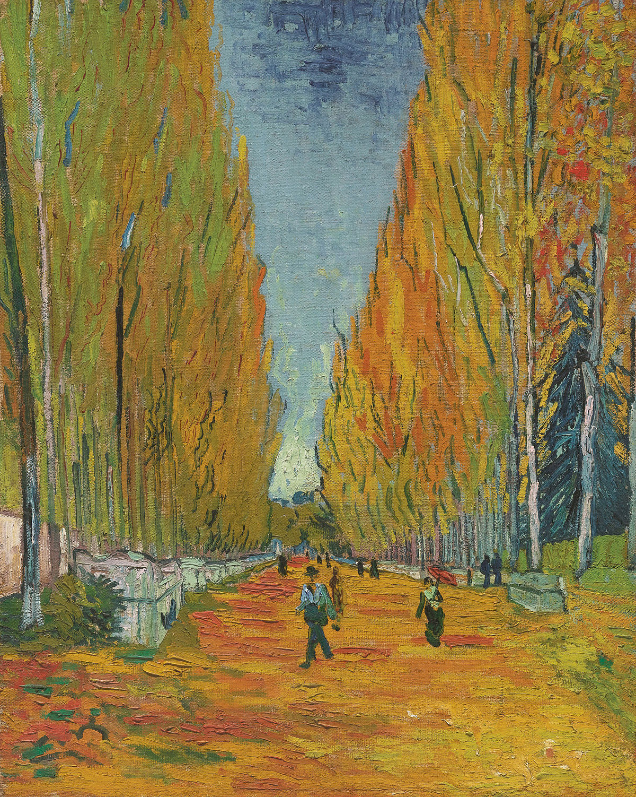
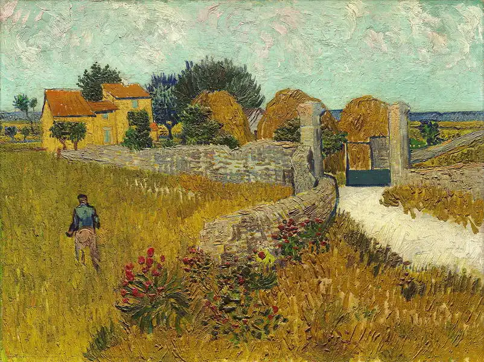
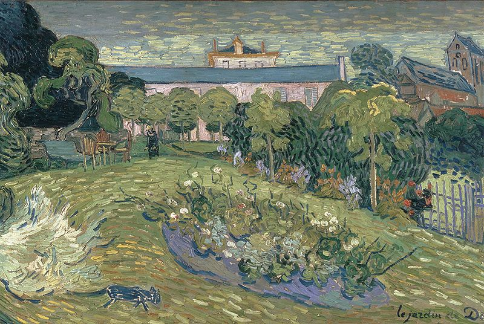
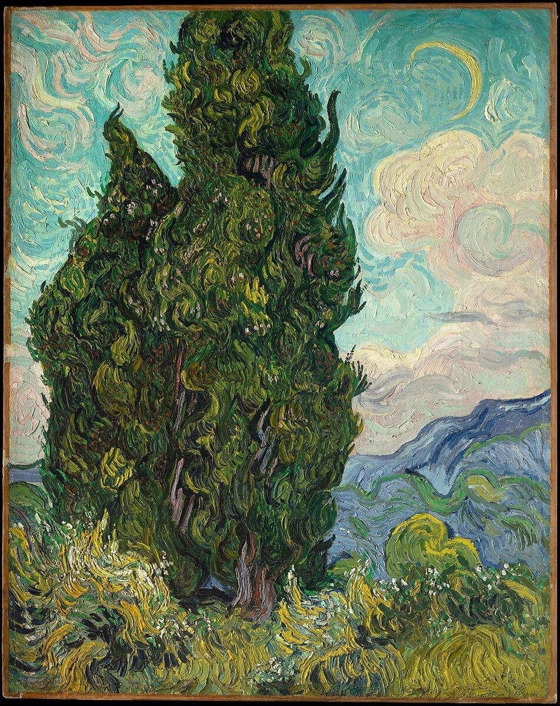
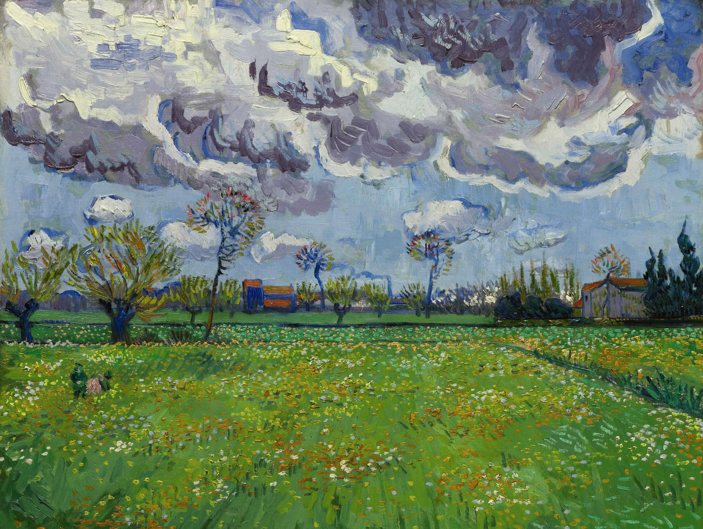

~ Starry Night ~
Painted in 1889

~ Café Terrace at Night ~
Painted in 1888

~ Green Wheat Field with Cypress ~
Painted in 1889

~ Wheat Field with Cypresses ~
Painted in 1889

~ Les Alyscamps ~
Painted in 1888

~ Farmhouse in Provence ~
Painted in 1888

~ Daubigny's Garden ~
Painted in 1890

~ Cypresses ~
Painted in 1889

~ Landscape under a Stormy Sky ~
Painted in 1888